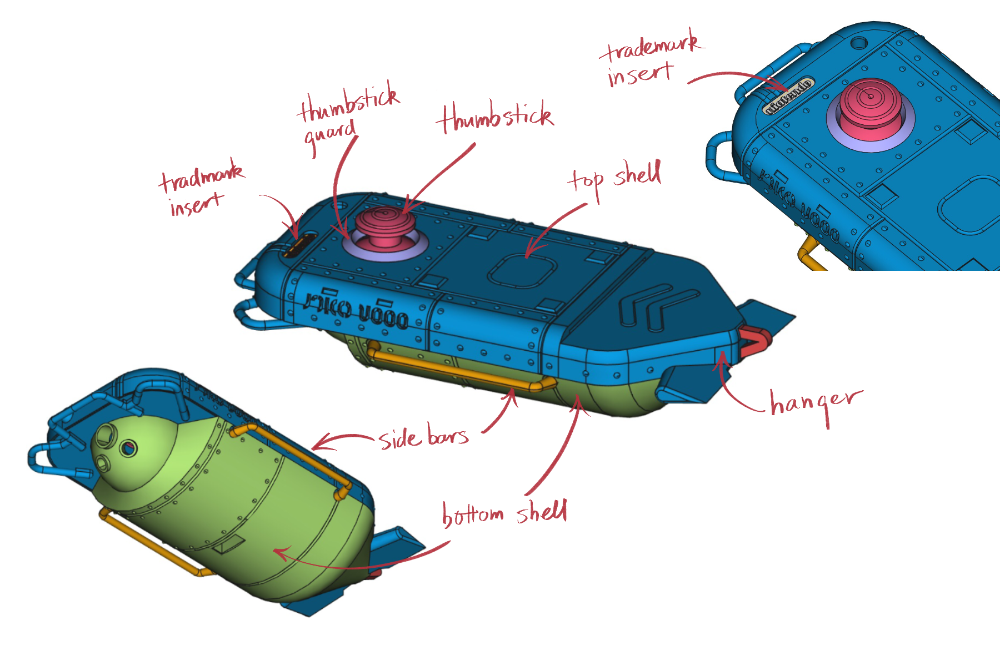

CQ-80 Terminal (NAMACO端末)
Table of Contents
1. How to make
It is fairly easy to make one of these because parts and pcb boards are printed, we just need to assemble and solder them together, plus dyeing the parts and uploading a program onto the microcontroller.
1.1. 3d-printed parts
There are eight parts to print: the top and bottom shells, thumbstick and thumbstick guard, left and right side bars, the trademark insert on the top, and the hanger at the tail. The 3d model files for them are in /step and /dae directories. step and dae are two 3d model file formats, any 3d printing service accepts at least one of the two.

Figure 1: 3d-printed parts and their canonical name
The two 3d-printing services that I know of are Shapeways and Xometry. Visit their website, upload the model files and select the material and the 3d-printing technology to use, along with other details like finishing and color.
I recommend using MJF or SLS (technology) with nylon 12 (material) for all the parts except the trademark insert. Nylon 12 (shapways calls it “versatile plastic”) is strong and inexpensive. MJF and SLS are not too expensive and have great resolution. You can use SLA, but it is more expensive and I didn’t look into its available materials.
Because the trademark insert is very small and detailed, SLA suits better. SLA has a higher resolution than MJF and SLS. Any of the available materials for SLA will do.
Don’t use FDM. Its resolution is too low, and some structures in the parts simply cannot be printed with FDM.
Here is a description of 3d-printing technologies I mentioned above: 3D Printing Technology Comparison: FDM vs. SLA vs. SLS. SLS and MJF are quite similar, what it says about SLS pretty much applies to MJF too.
1.2. Install threaded inserts to the printed parts
Out of the eight parts, top and bottom shell are fastened together by four screws, thumbstick guard and hanger are glued to the top shell, and trademark insert and side bars are friction-fit. The PCB board and USB breakout board are also screwed to the bottom shell.
Therefore, we need to install threaded inserts to top and bottom shell. The parts are designed to use M2 screws and M2 threaded inserts. Here is a tutorial on installing heat-set inserts: Using Heat Set Inserts. You need iron and heat-set insert tip.
Install inserts on these places:

Figure 2: Arrows points to the places to install inserts
1.3. Dye the parts
Use synthetic dye because the parts are made of nylon. I used Rit Dyemore since they are readily available in North America.
For the off-white color for the main body, I used this formula: Special White, basically just the sandstone color. For the magenta-ish color of the thumbstick, thumstick guard and the hanger, I used this formula: Red Candies.
Here is Rit’s official guide: How to Dye Using the Stovetop Method. I think using a kettle to boil the water and pouring into a container is fine, at least for the lighter off-white color.
You can also paint the parts. I imagine painting gets you closer to the original in-game model, because you can paint multiple colors to the part and create a glossier finish.
1.4. Upload program to the microcontroller
You need a computer, a micro-usb cable and the Adafruit microcontroller.
- Follow this guide—Arduino Support Setup—to install Arduino IDE and support software. The board we use is nRF52832, follow instructions for nRF52832 and ignore ones for nRF52840.
- Test that everything is working fine by following this guide—Arduino Board Testing. Don’t skip this step.
- Use the Arduino IDE to open
/arduino/controller/controller.ino, and hit the right-pointing arrow to upload the program. The board and port settings should be already set by the previous step when we test the board.
1.5. Print PCB boards
There are two boards to print, the main board (/board) and the USB breakout board (/usb_breakout). I used OSHPARK to print PCB boards. There are cheaper providers I haven't tried like pcbway and jlcpcb.
Take OSHPARK as an example, go onto their website and click “browse for files”, and choose the zip file for the board, eg, /board/board.zip or usb_breakout/usb_breakout.zip. Then hit continue all the way. Use USPS for shipping.
1.6. Solder electronic parts
- Solder the microcontroller to the main board
- Solder the joystick to the main board
- Solder the USB female connector to the USB breakout board
- Connect the USB breakout board to the micro-USB breakout
- Solder resistors to the main board
- Solder header pins for the LED’s to the main board
- Solder some jumper wires to the LED’s and connect them to the header pins on the main board.
Of course, you can use LED’s of whatever color you like, just make sure the dimension (5mm, 3mm, 8mm) are right.
TODO (solder instruction graphics)
1.7. Assemble
Bottom shell:
- Screw the USB breakout to the bottom shell
- Screw the main board to the bottom shell
- Plug in the micro USB plug to the micro controller
- Install the thumbstick onto the joystick
Top shell:
- Glue/tape the thumstick guard into place
- Glue/tape four LED’s into place
- Glue/tape the hanger into place
- Glue/tape the battery to the top shell
Assemble:
- Plug in LED’s wires to the main board
- Plug in the battery to the microcontroller
- Screw the top and bottom shell together
- Install side bars.
2. Parts listing
3d-printed parts (find under /step or /dae):
Mechanical parts:
- M21 screws (8mm in length) × 4
- M2 screws (4mm) × 4
- Heat-set2 M2 threaded inserts (4mm × 3.5mm) (length × outer diameter) × 8
Printed PCB boards:
Electronic parts:
- Adafruit Feather nRF52 Bluefruit LE (nRF52832) (nRF52840 should also work if you know how to modify the program)
- Adafruit Lithium Ion Battery 3.7V 2000mAh
- Alps RKJXV1224 joystick (aka switch pro controller replacement joystick)
- Molex USB 2.0 type-A female vertical mount connector (product number 1050570001)
- Sparkfun USB micro-B male breakout (product number BOB-10031)
- Micro USB cable (for uploading the program to the microcontroller)
- USB male to USB male cable (for charging CQ-80)
Electronic consumables:
- 5mm red LED × 1 (top light)
- 3mm green LED × 1 (front lamp)
- 8mm white LED × 1 (head light)
- 5mm warm-white LED × 2 (side lights)
- Resistors, 220ω × 4, 100Kω × 1. The resistance doesn’t have to be exact, 220ω ones can be replaced by any resistor in the range of 50 to 300 ohms, and the 100K one can be replaced by any in the 10K-100K range.
- Jumper wires (female)
- Header pins
- LCD tape (the ones used to tape screens and batteries in smart phones)
Dye:
Tools:
- Soldering kit (iron & tin, third hand) (for soldering and installing threaded inserts)
- Heat-set insert tip (for installing threaded inserts)
- Pot, tong, gloves, etc (for dyeing)
3. Cost
Making the CQ-80 terminal costed me roughly $580, but part of it is because I have to buy parts in quantity and I made some unnecessary purchase. I can probably put the extra parts I have into kits for anyone want to make CQ-80. If I sell the kit for $50, plus the parts below, you should manage to make a CQ-80 in around $300, I think?
| 3d-printed parts | $150 |
| microcontroller | $25 |
| battery | $12 |
| Dye × 3 | $15 |
| Soldering kit | $30 |
| Total | $232 |
Footnotes:
“M2” is the “size” of the screw, read Thread types: The practical engineer’s guide for some explanations.
“Heat-set” means we melt the surrounding plastic and cool it to install the insert.